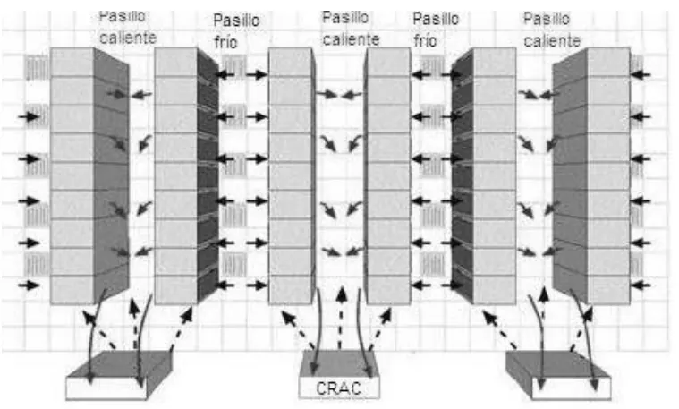
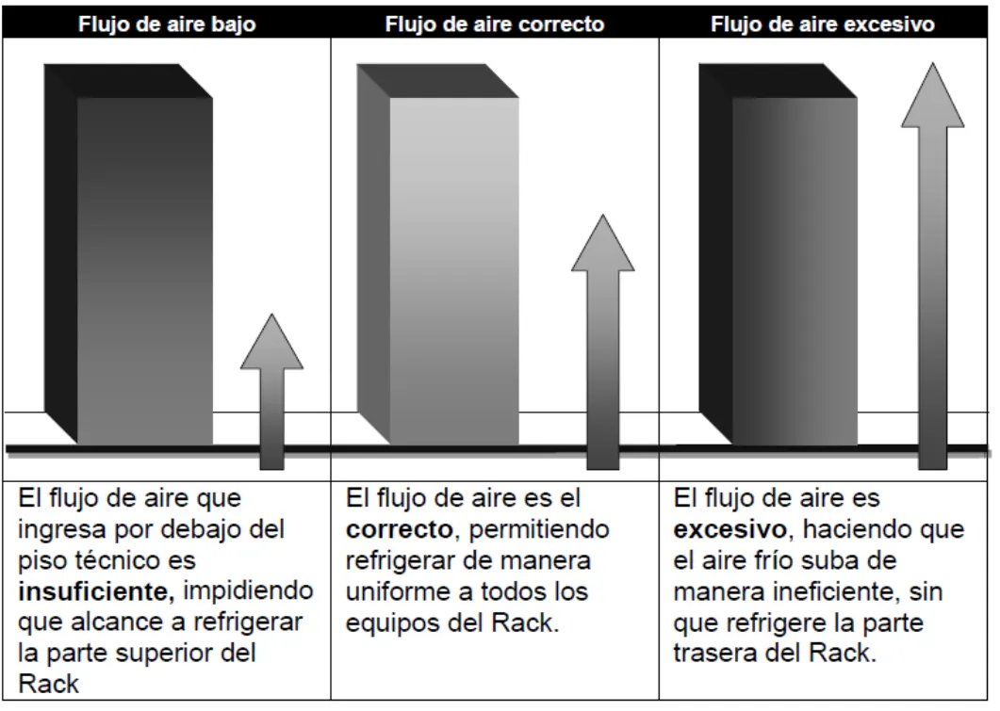

2° parcial, teoría
Cómo se enfría un data center, cuánta energía gasta y las consignas de nube, que no tienen apunte.
Resumen no juzgado. Todavía nadie evaluó si alcanza para estudiar solo con esto.
Cómo viene el examen
Hay dos parciales de 2023 en adelante en el Drive, del 09/11/2023 y del 05/11/2025. El de 2023 trae 7 preguntas de 1,5 a 2 puntos. El de 2025 trae 8 preguntas de 1 a 2 puntos. El de 09/11/2022 no entra en la cuenta.
| Tema | En cuántos de los 2 | Exámenes |
|---|---|---|
| Disposición por pasillos | 2 | 2023, 2025 |
| Presión de aire desde el piso | 2 | 2023, 2025 |
| Frigorías de racks, con cuenta | 2 | 2023, 2025 (dos veces) |
| Modelos de implementación de nube | 2 | 2023, 2025 |
| Categorías de servicios cloud | 2 | 2023, 2025 |
| PUE con componentes y torres, con cuenta | 1 | 2023 |
| Tabla de PUE 1,2, 1,5 y 1,8, solo recuperatorio | 1 | 2023 |
| Ventajas de nube y aspectos a considerar | 1 | 2025 |
Temperatura y humedad
El apunte fija estos rangos:
- Temperatura: de 17 a 21 °C es lo óptimo, y de 15 a 25 °C lo aceptable. La norma TIA/EIA-942 pide de 20 a 25 °C.
- Humedad: de 40 a 55 %. Por debajo de 40 % hay descargas electrostáticas, y por encima de 55 % hay corrosión.
Es la regla de los 10 grados, de Arrhenius. El apunte dice que «la vida de un componente o material se reduce a la mitad por cada 10ºC de aumento en la temperatura; aplicado inversamente: por 10ºC de disminución de temperatura, la vida útil de un semiconductor se duplicará». De ahí salen los rangos que indican los fabricantes de circuitos integrados. Fuente: apunte 6, Climatización, páginas 1 y 2.
Lo que agrega el apunte sobre la temperatura:
- Cualquier temperatura de más de 25 °C se corrige de inmediato, porque pone en riesgo el equipamiento.
- En un data center grande no hay un único punto de referencia. Se mide por pasillos, y a veces en varios racks.
- Si los equipos se renuevan cada tres años, probablemente se pueda operar a 27 °C. Si van a durar mucho más, conviene un rango más bajo.
- Los fabricantes recomiendan 22 °C (IBM y HP) y 23 °C (Dell). Google opera a 26 °C, Sun a 27 °C, Cisco a 25 °C y Facebook a 22 °C.
Fuente: apunte 6, Climatización, página 1.
La humedad ambiental es «la cantidad de vapor de agua presente en el aire». Se expresa como humedad absoluta o como humedad relativa, HR. El apunte la llama la amenaza menos visible, porque algunos ni la monitorean. Los dos riesgos:
- Descargas electrostáticas (ESD): aparecen cuando baja la humedad, y más si además baja la temperatura. Una descarga apenas perceptible no le hace daño a una persona, pero 10 V ya pueden dañar un equipo.
- Corrosión: pasa cuando un metal queda expuesto al agua, porque se moja o por la condensación con humedad alta. Los componentes se dañan y puede haber pérdida de datos.
Para prevenir las ESD, el apunte pide revisar periódicamente la conexión a tierra común y la de los equipos, mantener los puestos limpios y sin material innecesario, sobre todo plástico, e instalar humidificadores, que arrancan solos cuando sus sensores llegan al umbral. La humedad relativa y la temperatura se miden en el frente, donde entra el aire frío. Dentro del rack, el instrumento va en el primer tercio desde arriba, a 5 cm del frente del servidor. Fuente: apunte 6, Climatización, páginas 1 y 2.
Calor, BTU y frigorías
Todo lo que consume un equipo termina en calor, así que hay que sacar esa misma potencia con el aire acondicionado. Las equivalencias del apunte son estas:
| Para pasar | Hacé |
|---|---|
| BTU/h a W | BTU/h x 0,293 |
| W a BTU/h | W x 3,41 |
| Toneladas a W | Toneladas x 3530 |
| W a toneladas | W x 0,000284 |
Fuente: apunte 6, Climatización, página 4.
La frigoría es la capacidad de bajar 1 °C la temperatura de un kilogramo de agua a 15,5 °C. Muchos equipos domésticos expresan su capacidad en frigorías. Fuente: apunte 6, página 4.
El BTU, la unidad en que muchos fabricantes dan la generación de calor, «equivale al calor necesario que se necesita para elevar en un grado Fahrenheit una libra de agua = 0.45 kg». El apunte dice que está en desuso por poco práctica, pero sigue vigente. Las frigorías tampoco son una unidad aceptada en el Sistema Técnico. Fuente: apunte 6, página 4.
El apunte explica de dónde sale todo ese calor. Prácticamente el 100 % de la electricidad que entra se transforma en calor, porque todo genera calor, desde servidores y UPS hasta iluminación y sensores. Los pasos para estimarlo:
- Definir el consumo actual en kW por rack y el estimado para los próximos años. No todos los racks consumen igual. Los de comunicaciones, red y telefonía generan muy poco calor, y los servidores con muchos procesadores, mucho.
- Con el calor de cada rack, definir la estrategia de refrigeración y las zonas o riesgos.
- Calcular la densidad en kW/m² y el promedio en kW sobre la superficie total.
- Sumar el calor de la UPS, la iluminación, las ventanas y las personas, aunque se recomienda que no haya personas en la sala.
Hoy es común encontrar racks de 20 kW o más, tendencia que crece desde 2004 con los servidores de 1U y los blade. El peor escenario es un rack lleno de servidores de 1U o blade, de 30 a 50 kW por rack. Fuente: apunte 6, Climatización, páginas 2 y 4.
El factor de BTU a frigorías no está en el apunte
Sale de apuntes de alumnos
El apunte define la frigoría, pero no da cómo pasar de BTU/h a frigorías. Tres exámenes de alumnos, de 2022, 2023 y 2025, usan 4 BTU/h por frigoría. No hay corrección de la cátedra que lo confirme, así que preguntalo antes del parcial.
Exámenes de alumnos de 2022, 2023 y 2025
Te dan cuántos equipos hay en cada rack y cuánto consume cada uno. Las cuentas no se resuelven acá. Practicala con el examen de 2025.
Calor de una sala
El apunte toma 21 servidores 2U de 575 W, y lleva la carga a BTU/h.
Apunte 6, Climatización, página 4
Errata del apunte en ese ejemplo
El apunte escribe 12,8 kW y 41.212 BTU/h. Pero 21 x 575 da 12.075 W, y eso por 3,41 da unos 41.176 BTU/h. Usá el método, no esos números.
También da una regla rápida, 12.000 BTU/h o 3.517 W por cada 37 m². Fuente: apunte 6, página 5.
El apunte aclara que calcular la capacidad de enfriamiento es una de las tareas más complejas, porque «no existe una fórmula para tal fin, sino que es un proceso artesanal que depende principalmente de la planificación». La regla de los 37 m² es un mínimo, y de ahí se sube según los kW/m² y el resto de lo que genera calor. APC propone un método de estimación con variables fáciles de medir, pero no resuelve todo el problema. Y aunque sobre capacidad, si el aire no llega bien a los equipos es un desperdicio. Fuente: apunte 6, página 5.
Cómo repartir los racks
- Distribución equilibrada: todos los racks consumen parecido. Los equipos se ubican a propósito para que cada rack quede cerca del promedio.
- Distribución zonal: los racks que más consumen van juntos, con un enfriamiento especial para esa zona de mayor densidad.
- Comunicaciones: los equipos de muy baja densidad, de menos de 3 kW por rack, también se agrupan por función y por calor. Algunos data centers les dan una sala propia.
- La peor opción: racks de densidad extrema dispersos en un data center de densidad promedio baja. Mantenerlos a buena temperatura es muy complejo y aparecen los hot spots, o puntos calientes.
A los equipos de refrigeración les puede llevar de 15 a 30 minutos restablecer la temperatura. Fuente: apunte 6, Climatización, página 5.
Estrategias de climatización
| Estrategia | Hasta cuánto | Fuente |
|---|---|---|
| Sala | Menos de 2 kW por rack | Páginas 5 y 6 |
| Fila | De 3 a 25 kW por rack | Página 6 |
| Rack | Hasta 50 kW por rack | Páginas 6 y 7 |
Fuente: apunte 6, Climatización.
Ventajas y desventajas de cada estrategia, según el apunte:
- Orientada por sala, densidad baja: fue la primera, desde los setenta, y fue el diseño estándar. Siempre lleva piso técnico para los cables y el aire frío, y se usa en data centers de 300 a 800 m². Es la mejor opción económica con menos de 2 kW por rack y da una temperatura pareja en toda la sala. Pero no es eficiente con más de 2 kW por rack, cuesta adaptarla, depende de la arquitectura, como la altura del techo o la forma de la sala, y requiere un estudio de CFD, que es caro. Además mezcla el aire frío con el caliente. Es una tendencia en desuso.
- Orientada por fila, densidad media: hay al menos un CRAC por fila, en la punta o en el medio. El aire frío recorre menos distancia y hace falta menos ventilación. Hoy es la más usada y eficiente en data centers nuevos. No requiere necesariamente piso técnico, permite ajustar la temperatura y la redundancia de cada fila, y es modular y rápida de instalar. Su desventaja es que ocupa espacio crítico de la zona de racks.
- Orientada por rack, densidad alta: la unidad de enfriamiento va en el mismo rack, abajo, arriba o a los costados. Las de los costados se llaman side-to-side y piden racks más anchos que los de 19 pulgadas. Es modular, rápida de implementar y permite la máxima densidad. Pero es cara de comprar, instalar y mantener, no comparte con otros racks la capacidad que le sobra, y hay que cuidar que su aire caliente no afecte a los racks de al lado.
La refrigeración por fila puede ser de tres tipos:
- Aire inyectado desde el piso: por las rejillas del piso técnico, al frente de los racks, con la presión adecuada.
- En la fila: un equipo entre los racks, en la mitad o en la cabecera, enfría hacia los costados con un recorrido corto. Su desventaja es que ocupa lugar de equipos.
- Por encima de los racks: tuberías y ventiladores arriba, apuntando al frente de los racks. No necesita piso técnico.
Fuente: apunte 6, Climatización, páginas 5 a 7.
Las formas de circular el aire, de la página 8:
- Piso técnico, menos de 8 kW por rack.
- Pasillos fríos cerrados, menos de 20 kW, con ahorro de 20 a 25 %.
- Pasillos intercalados, menos de 25 kW.
- Integrado, de 25 a 50 kW.
Lo que agrega la página 8 sobre cada una:
- Por piso técnico: el equipo de la cabecera de la hilera manda el aire frío por debajo del piso, y sube por las rejillas perforadas. El aire caliente sale por atrás sin contención y vuelve a la unidad. Para instalaciones chicas.
- Con pasillos fríos cerrados: igual, pero con el pasillo frío totalmente sellado. Para instalaciones medianas. Se puede aislar el pasillo frío o el caliente, con resultados parecidos.
- Climatizadores intercalados entre racks: el pasillo frío sellado y la unidad entre los racks, en la mitad de la hilera. El circuito es más corto y aprovecha mejor el aire frío. Para instalaciones medianas a grandes.
- Integrado en el rack: la unidad va en ese rack, con el circuito más corto de todos.
Los intercambios de aire con el exterior perjudican la temperatura, así que siempre se minimiza el acceso a la sala. También importa la distancia de la salida de aire frío y de la toma de aire caliente a la unidad. Fuente: apunte 6, Climatización, página 8.
Pasillos fríos y calientes
Describa cómo se diseña de la forma más adecuada la disposición por pasillos, características y ventajas2° parcial teoría, 09/11/2023 y 05/11/2025
Los racks se alinean frente con frente, y quedan pasillos intercalados, uno frío y uno caliente. Los equipos toman aire frío por el frente y expulsan el caliente por atrás. El aire frío entra por rejillas y el CRAC toma el caliente. Aislar los pasillos reduce el consumo.
Fuente: apunte 6, Climatización, página 7.

Lo que el apunte agrega sobre el diseño de pasillos:
- La salida de aire caliente de una fila queda enfrentada a la de la fila siguiente.
- El CRAC (Computer Room Air Conditioning) monitorea y controla la temperatura y la humedad. Toma el aire caliente por una entrada y larga el frío por una salida.
- Las unidades de enfriamiento trabajan coordinadas y con la carga repartida en partes iguales. Así duran más y equilibran la energía.
- La aislación completa entre pasillos se hace al comienzo o al final de los racks, con puertas para entrar al pasillo aislado. Impide que el aire se mezcle, mejora la temperatura y baja el consumo.
Fuente: apunte 6, Climatización, página 7.
Presión de aire
Describa cómo debe ser la presión adecuada de aire desde el piso, analice los tres casos y cuál es el más adecuado2° parcial teoría, 09/11/2023 y 05/11/2025
- Flujo bajo: es insuficiente y no alcanza la parte superior del rack.
- Flujo correcto: refrigera de manera uniforme a todos los equipos del rack. Es el adecuado.
- Flujo excesivo: el aire sube de forma ineficiente, sin refrigerar la parte trasera del rack.
Fuente: apunte 6, Climatización, página 9.

La velocidad de los ventiladores EC se regula con esa diferencia de presión. Los sensores de temperatura van en la sala y en el rack, a 2/3 de altura. Fuente: apunte 6, página 9.
Para el apunte, una de las claves está en «descargar la cantidad justa de aire frío, dirigida hacia la fuente de calor, mediante rejillas en el piso técnico o por ventilación superior». Con piso técnico se compara la presión dentro del piso falso con la de afuera, y según esa diferencia los ventiladores EC de los climatizadores giran más rápido o más lento. Si hay un solo pasillo frío encapsulado, se mide la diferencia de presión entre el interior del pasillo y la sala. Fuente: apunte 6, Climatización, página 9.
Sensores y mantenimiento
Los sensores miden temperatura y humedad y mandan alertas por la red, a una consola central, por correo o por SMS. El apunte describe cuatro:
- De sala: miden la temperatura general. Van donde la muestra represente a toda la sala.
- De rack: miden un rack específico, por la importancia de sus equipos o como muestra de una fila. Van a 2/3 de la altura total, contando desde abajo.
- De piso: detectan fugas de líquidos. Van debajo del piso técnico, cerca de los equipos de refrigeración.
- Para el aire acondicionado: van debajo de la salida de aire, como doble control de los sensores propios del equipo. Permiten detectar una falla temprano.
El mantenimiento del aire acondicionado, con el cambio de filtros, se hace con la regularidad que fija el fabricante. Fuente: apunte 6, Climatización, páginas 9 y 10.
Eficiencia energética
Las fórmulas de PUE y DCiE están en el 1° parcial. El consumo promedio se reparte en 47 % de equipos, 40 % de enfriamiento, 8 % de electricidad y 5 % de UPS. Fuente: apunte 6, Climatización, página 3.
Las buenas prácticas del apunte 5 son estas:
- Medir el PUE.
- Ordenar el flujo de aire.
- Ajustar termostatos y potencia.
- Como avanzadas, capacidad variable, virtualización y medidas detalladas.
El mismo cuadro del apunte 6 agrega dos datos. En un servidor, el procesador usa no menos del 30 % de la electricidad, y más según la cantidad de núcleos. Y el uso promedio real de un servidor ronda el 20 %, con un 80 % ocioso. Ese desaprovechamiento es uno de los principales motivos de la virtualización. La UPS puede llevarse hasta un 15 %, según su tipo y su topología. Fuente: apunte 6, Climatización, página 3.
El apunte 5 trae otros repartos del consumo
La página 8 del PDF del apunte 5 muestra dos gráficos con números distintos a los del apunte 6. Uno, de un estudio de Dell de 2006, da 41 % de equipos de IT, 28 % de distribución de energía y 31 % de enfriamiento. El otro da 30 % de IT, 33 % de chiller, 18 % de UPS, 9 % de CRAC, 5 % de PDU, 3 % de humidificador, 1 % de switchgear y generador, y 1 % de iluminación. Son fuentes distintas. Si te piden el reparto, preguntá cuál toma la cátedra.
Las prácticas del apunte 5, completas:
- Básicas: medir el PUE «tan frecuentemente como posible», gestionar el flujo de aire con chapas o láminas plásticas, ajustar los termostatos según las especificaciones, y optimizar la distribución de potencia.
- Avanzadas: gestión inteligente de capacidad variable, como mover la carga de cómputo a la noche frente a prender y apagar CRAC, virtualización, y medidas detalladas por rack y por servidor.
Fuente: apunte 5, Eficiencia Energética, página 9 del PDF.
Cuánto ahorra bajar el PUE
Un rack de 10 kW encendido todo el año, con el kWh a $200. Sus equipos consumen 10 x 24 x 365 kWh por año.
- Con PUE 1,8, el total es 157.680 kWh por año, o sea $31.536.000.
- Con PUE 1,6, el total es 140.160 kWh por año, o sea $28.032.000.
- El ahorro es de unos 3,5 millones, un 11 %.
Apunte 5, Eficiencia Energética, página 10 del PDF
Errata del apunte 5
El apunte imprime 87000 en la cuenta de ahorro. La cuenta 10 x 24 x 365 da 87600, y el apunte después usa ese valor.
Te dan racks, UPS, torres, humidificador y extinción. Primero piden el PUE y después a cuánto debería cambiar el consumo de las torres. Las cuentas no se resuelven acá.
La tabla pide rack 1, rack 2, kWh de IT, de soporte, total y DCiE. El ejemplo de abajo sigue el mismo camino con otros números.
Modelado de un rack
Un rack de 14,89 kW y otro de 4,47 kW suman 19,36 kW. Eso da 169.629 kWh por año. Con PUE 1,2, el soporte es 33.926 kWh y el total 203.554 kWh.
Apunte 5, Eficiencia Energética, práctica de modelado
La tabla del apunte va de PUE 1,1 a 2,0 y repite los mismos pasos en cada fila:
- Sumar los kW de los racks. Es la carga de IT.
- Pasarla a kWh por año, con 24 horas por 365 días. Es el mismo valor en todas las filas.
- Sacar el soporte. Como el PUE es el total sobre IT, el soporte es lo que el total tiene de más, IT por (PUE − 1). Con PUE 1,1 da 16.963 kWh y con 1,2 da 33.926 kWh.
- Sumar IT y soporte para el total. Es IT por el PUE.
- Multiplicar el total por el precio del kWh, que en el apunte es $200, para el costo por año.
La consigna del parcial pide además el DCiE de cada fila, que es 1 sobre el PUE. Fuente: apunte 5, Eficiencia Energética, páginas 12 y 13 del PDF.
La cuenta del apunte no da exacta
19,36 x 24 x 365 da 169.594 kWh, y el apunte usa 169.629. La diferencia sale, probablemente, de que los kW de los racks están redondeados. En el parcial usá los datos que te dan.
Nube
Estas consignas se toman y no tienen apunte
En el Drive no hay ningún material de cloud computing, salvo los exámenes con respuestas de alumnos. Por eso acá van sin respuesta. Conseguí el apunte o la clase de tu comisión.
Sin respuesta: falta el apunte.
Sin respuesta: falta el apunte.
Sin respuesta: falta el apunte.
Sin respuesta: falta el apunte.
Practicá el 2° parcial de teoría
Elegí una opción para ver la explicación. Las que dicen «Se tomó» salieron de exámenes reales.
- 1
¿Qué rango de humedad da el apunte?
Por debajo de 40 % hay descargas electrostáticas, y por encima de 55 % corrosión.
- 2
¿Qué rango de temperatura es el óptimo según el apunte?
De 17 a 21 °C es lo óptimo, y de 15 a 25 °C lo aceptable.
- 3
¿Qué representa una frigoría, según el apunte?
Esa es la definición del apunte.
- 4
¿Qué factor pasa de W a BTU/h?
W x 3,41 da BTU/h.
- 5
¿Qué estrategia alcanza hasta 50 kW por rack?
La estrategia por rack llega hasta 50 kW.
- 6
¿Cómo toman el aire los equipos con pasillos intercalados?
Se tomó: 2° parcial teoría, 2023 y 2025, adaptada
Toman aire frío por el frente y expulsan el caliente por atrás.
- 7
¿Cómo se alinean los racks?
Se tomó: 2° parcial teoría, 2023 y 2025, adaptada
Así quedan pasillos intercalados, uno frío y uno caliente.
- 8
¿Qué pasa con un flujo de aire bajo desde el piso?
Se tomó: 2° parcial teoría, 2023 y 2025, adaptada
El flujo bajo es insuficiente para llegar arriba.
- 9
¿Qué pasa con un flujo de aire excesivo?
Se tomó: 2° parcial teoría, 2023 y 2025, adaptada
Esa es la descripción del apunte para el flujo excesivo.
- 10
¿Cuál de estas es una buena práctica básica del apunte de eficiencia?
Medir el PUE es la primera de la lista.
Todavía no respondiste ninguna.